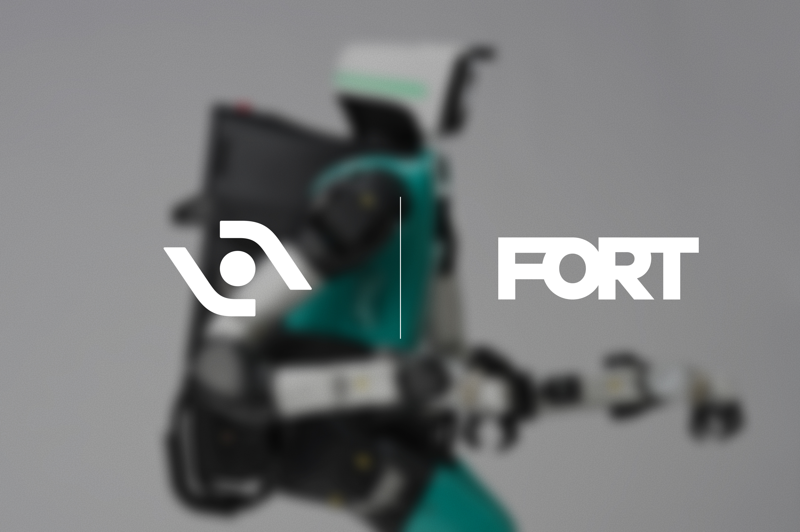

| 重点新闻 |
本期主条  Agility × FORT：Digit 5 协作安全架构延伸至厂内安全系统 10月1日，Agility 与 FORT Robotics 签署 MOU，为 Digit 5 共建含安全 pendant、机载通信与厂外接口的三层安全架构，将协作安全从机内人体检测、安全 cues 与独立安全控制器扩展到外部安全系统。通稿称 Digit 前代累计运行超 65000 小时，客户含 Schaeffler、GXO、丰田加拿大等。编辑判断：无围栏部署的瓶颈在可审计的安全证据链；应跟踪 OSHA/CE 语境下的第三方 field evaluation，而非仅读新闻稿形容词。 Agility Robotics |
Nucleus 发布近两小时无剪辑工厂作业：自称 60% 自主、40% 遥操 10月1日，创始人 Melvin Schwarz 在 X 发布近两小时无剪辑厂内录像，涵盖拣件、上架、搬运与台车转运，并披露该次演示约 60% 自主、40% 遥操（公司未说明统计方法）。官网口径为按小时计费的 humanoid labour，记录视觉、深度、运动、接触与人工纠正以迭代模型，并称常规班次 4—6 小时。编辑观点：「 boring work」叙事诚实，但 60/40 仍非第三方审计；读者应要求连续班次 MTBF 与遥操人力配比，而非把片长等同 autonomy。 Nucleus |
科技日报：长隆飞船乐园 300 余台具身机器人常态化上岗 9月29日《科技日报》报道，9月24日横琴长隆飞船乐园启幕全球首个大规模具身智能主题乐园，超 300 台智元机器人覆盖文娱商演、导览、零售、酒店等场景，同日第 20000 台 A3 Ultra 交付长隆；稿援引企业口径年底或扩容至约 1000 台。文内引 IFR 语境称上半年中国人形出货量全球占比约 97%。编辑判断：与官方通稿相互印证部署规模；大客流互动场景的故障间隔与运维编制仍未见独立统计，不宜把开园热度直接外推为工业模板。 科技日报 |
德塔智能发布原生人形基础模型 Delta-0（Δ₀） 中国日报9月29日电：9月28日德塔智能发布 Delta-0，官方 Demo 一镜到底展示家居多任务连续作业（识别、整理、取放、开冰箱弃物等），模型采用「大脑—小脑—力位」协同，将视觉语言输入映射为全身动作目标。官网 deltai.com 同步更新研究博客。编辑观点：长程 household 链路的可核验性取决于失败片段是否公开；与 Figure Helix 对比应回到逐步成功率与重试次数，而非单句「比肩」表述。 中国日报网 |
启元机器人：10 月 1 日起上海等地首批 Q1/T1 交付 10月1日，启元机器人在上海、深圳、杭州授权体验店开启首批交付，产品体验官彭志辉到场颁证；Q1/T1 基础版售价均为 19999 元，7 城体验店已布局。稿件称个人机器人从「全球首发」进入「用户在家使用」阶段。编辑判断：C 端交付是产能与售后压力测试；应跟踪返修率、电池循环与儿童场景安全投诉，而非仅看门店排队照片。 新浪财经 |
宇树定档 10 月 22 日世界物理 AI 大会暨合作伙伴生态大会 9月29日改革网援引宇树官方口径，2026世界物理 AI 大会暨宇树合作伙伴生态大会将于10月22日在杭州国际博览中心二期举行，主题「宇十俱进，树业共生」，预计 3000 余名嘉宾，展示全系产品与开源具身生态及「宇创计划」路演。编辑观点：大会是生态战而非单机发布；对产业读者，应关注开源工具链、开发者分成与海外交付伙伴是否同期披露可验证 SLA。 改革网 |
宇树科技 9 月 30 日收 450.40 元，摩根大通首次覆盖给予「减持」 10月2日新浪财经转述，9月30日宇树科技（688836）收盘 450.40 元、总市值约 1822 亿元，较 8 月开盘高点 1100 元显著回落；摩根大通在国庆前后首次覆盖给出「减持」评级、目标价 300 元（报道引述 2027 年 12 月口径）。编辑观点：资本定价与产线/出货无关但影响融资节奏；应把研报假设（市销率、解禁 2027 年 8 月约 2.287 亿股）与官方披露营收对照，而非用股价单日波动代替产业判断。 新浪财经 |